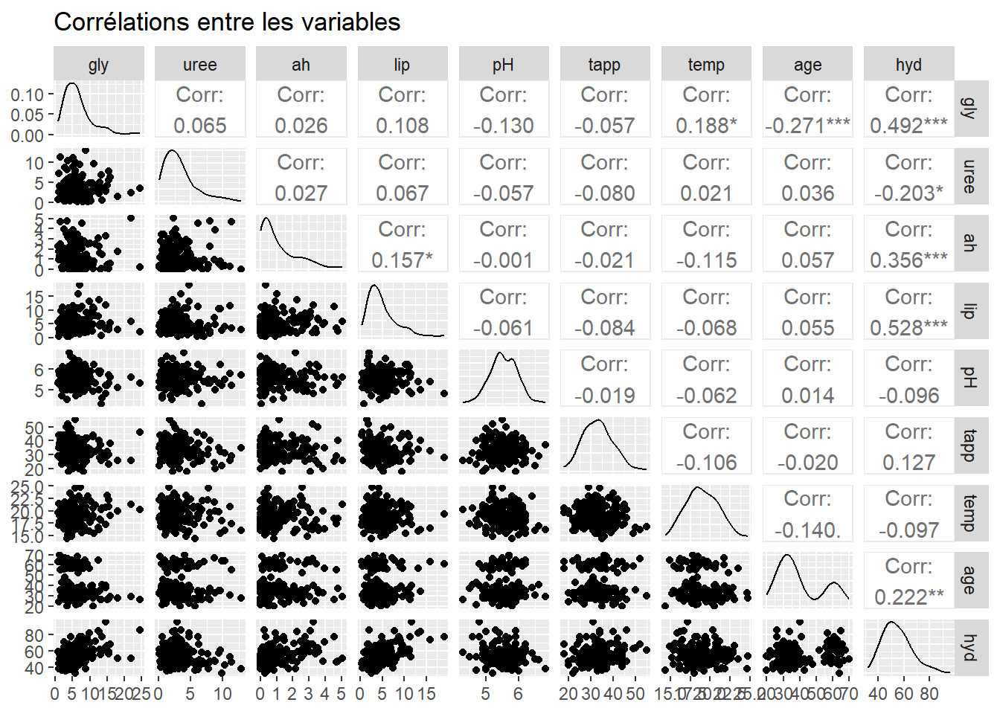
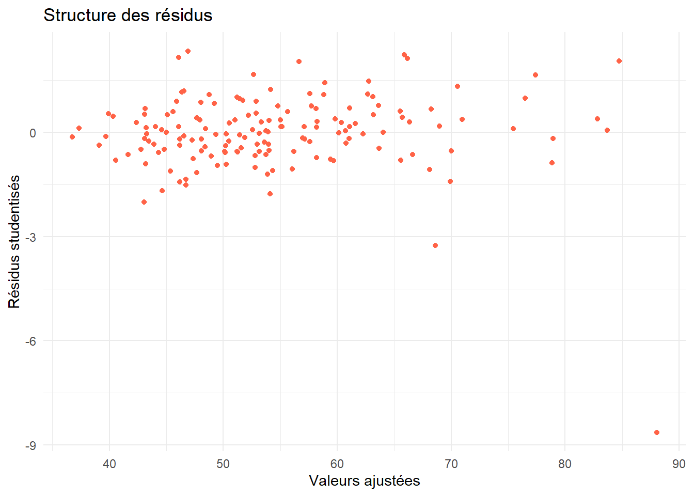
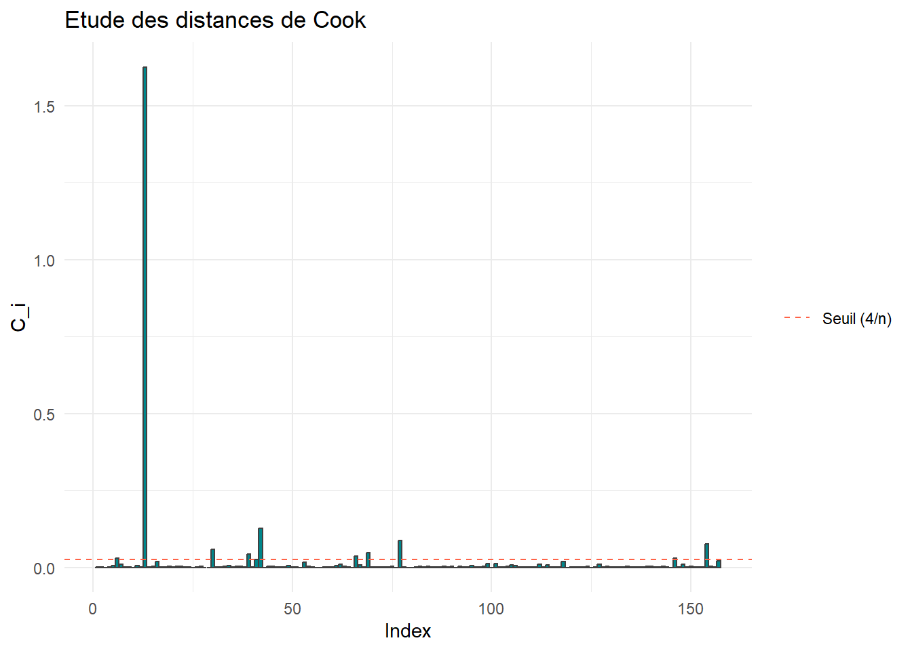
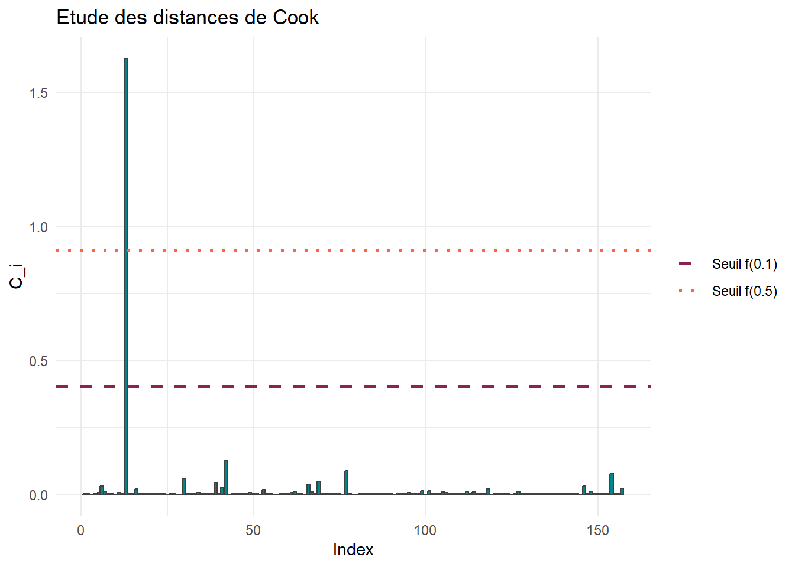

gly uree ah lip
Min. : 0.820 Min. : 0.100 Min. :0.000 Min. : 0.320
1st Qu.: 3.710 1st Qu.: 1.470 1st Qu.:0.270 1st Qu.: 2.520
Median : 5.700 Median : 2.720 Median :0.650 Median : 4.110
Mean : 6.379 Mean : 3.305 Mean :1.137 Mean : 4.823
3rd Qu.: 7.840 3rd Qu.: 4.270 3rd Qu.:1.740 3rd Qu.: 6.130
Max. :24.540 Max. :12.880 Max. :5.080 Max. :19.060
pH tapp temp age
Min. :4.300 Min. :18.00 Min. :14.40 Min. :20.00
1st Qu.:5.300 1st Qu.:28.00 1st Qu.:17.70 1st Qu.:30.00
Median :5.500 Median :33.00 Median :18.90 Median :35.00
Mean :5.534 Mean :33.22 Mean :19.03 Mean :40.15
3rd Qu.:5.800 3rd Qu.:37.00 3rd Qu.:20.60 3rd Qu.:56.00
Max. :6.800 Max. :55.00 Max. :24.70 Max. :70.00
hyd
Min. :32.00
1st Qu.:46.00
Median :53.00
Mean :54.61
3rd Qu.:62.00
Max. :96.00
library(GGally)ggpairs(cremes_hydratantes,title ="Corrélations entre les variables")

Un modèle linéaire semble-t-il adapté afin d’expliquer le score d’hydratation en fonction des autrs variables ? Si oui, écrire mathématiquement ce modèle.
Réponse
La variable hyd est significativement corrélée à bon nombre d’autres variables, notamment avec les concentrations en glycérine, acide hyaluronique et lipides. Un modèle linéaire semble adapté pour expliquer le score d’hydratation.
On remarquede plus une faible corrélation entre les autres variables, ce qui est une propriété intéressante du jeu de données (cela est d’ailleurs suprenant, car les concentrations en principes actifs dans les crèmes sont pourtant nécessairement corrélées. Cette corrélation n’a pas été détectée ici).
On a alors comme modèle, pour chaque observation \(i \in \{1,\ldots,n\}\)\[hyd_i = \beta_0 + \beta_{hyd} hyd_i + \beta_{uree} uree_i + \beta_{ah} ah_i + \beta_{lip} lip_i + \beta_{pH} pH_i + \beta_{tapp} tapp_i + \beta_{temp} temp_i + \beta_{age} age_i + \varepsilon_i\] où les \(\varepsilon_i\) sont i.i.d. de loi \(\mathcal{N}(0,\sigma^2)\).
Ajuster le modèle précédent aux données. Préciser le coefficient de détermination \(R^2\) et si certains coefficients semblent statistiquement nuls. Le cas échéant, réajuster un modèle ne conservant que les variables significatives.
Réponse
On ajuste tout d’abord le modèle complet aux données.
Call:
lm(formula = hyd ~ ., data = cremes_hydratantes)
Residuals:
Min 1Q Median 3Q Max
-36.396 -3.051 0.091 3.008 12.679
Coefficients:
Estimate Std. Error t value Pr(>|t|)
(Intercept) 26.49476 8.81153 3.007 0.0031 **
gly 1.67350 0.12558 13.327 < 2e-16 ***
uree -1.26610 0.18629 -6.796 2.45e-10 ***
ah 2.53400 0.40452 6.264 3.86e-09 ***
lip 1.58228 0.14962 10.575 < 2e-16 ***
pH -0.44298 1.11949 -0.396 0.6929
tapp 0.30266 0.06855 4.415 1.94e-05 ***
temp -0.42097 0.23591 -1.784 0.0764 .
age 0.28699 0.03532 8.126 1.62e-13 ***
---
Signif. codes: 0 '***' 0.001 '**' 0.01 '*' 0.05 '.' 0.1 ' ' 1
Residual standard error: 5.783 on 148 degrees of freedom
Multiple R-squared: 0.7641, Adjusted R-squared: 0.7513
F-statistic: 59.91 on 8 and 148 DF, p-value: < 2.2e-16
Le coefficient de détermination du modèle est de \(R^2 = 0.7641\). Il semblerait que nous puissions ne pas rejeter l’hypothèse comme quoi les coefficients \(\beta_{pH}\) et \(\beta_{temp}\) sont nuls (ces variables pourraient ne pas intervenir pas dans le modèle).
On vérifie cela avec un test de modèles emboîtés. On teste ici \[H_0 : \beta_{pH} = \beta_{temp} = 0 \quad \text{contre} \quad H_1: \beta_{pH} \neq 0 \ \text{ou} \ \beta_{temp} \neq 0.\]
Call:
lm(formula = hyd ~ gly + uree + ah + lip + tapp + age, data = cremes_hydratantes)
Residuals:
Min 1Q Median 3Q Max
-37.063 -3.018 0.087 2.888 13.104
Coefficients:
Estimate Std. Error t value Pr(>|t|)
(Intercept) 15.33571 3.14247 4.880 2.68e-06 ***
gly 1.64295 0.12358 13.294 < 2e-16 ***
uree -1.26700 0.18686 -6.781 2.57e-10 ***
ah 2.60937 0.40391 6.460 1.38e-09 ***
lip 1.60520 0.14964 10.727 < 2e-16 ***
tapp 0.31687 0.06838 4.634 7.74e-06 ***
age 0.29265 0.03533 8.284 6.16e-14 ***
---
Signif. codes: 0 '***' 0.001 '**' 0.01 '*' 0.05 '.' 0.1 ' ' 1
Residual standard error: 5.808 on 150 degrees of freedom
Multiple R-squared: 0.7588, Adjusted R-squared: 0.7492
F-statistic: 78.66 on 6 and 150 DF, p-value: < 2.2e-16
anova(mod_complet,mod_reduit)
Analysis of Variance Table
Model 1: hyd ~ gly + uree + ah + lip + pH + tapp + temp + age
Model 2: hyd ~ gly + uree + ah + lip + tapp + age
Res.Df RSS Df Sum of Sq F Pr(>F)
1 148 4949.9
2 150 5059.7 -2 -109.75 1.6407 0.1973
Avec une \(p-value\) de 0.1973, one ne rejette pas \(H_0\). Cela signifie que le pH d’une vrème, ou sa température de stockage, n’expliquent pas le score hydratant d’une crème… du moins tant que celles-ci restent sur la plage de valeurs testées. On retient alors par la suite le modèle réduit.
Calculer les résidus studentisés \(t_i\) du dernier modèle avec `rstudent()``, puis :
analyser si certains résidus sont anormaux;
analyser le caractère gaussien du modèle avec un diagramme Q-Q plot;
analyser la structure des résidus en tracant le nuage de points \((\hat{y}_i,t_i)_{1 \leqslant i \leqslant n}\), où \(\hat{y}_i\) désigne la valeur ajustée par le modèle pour l’observation \(i\).
Réponse
On calcule tout d’abord les résidus studentisés \(t_i\), pour \(1\leqslant i \leqslant n\).
rstud <-rstudent(mod_reduit)
On rappelle que ces résidus suivent une loi de Student \(\mathcal{T}_{n-p-1}\), où ici \(p=7\) est le nombre de paramères à estimer dans le modèle.
Afin de déterminer si certains résidus sont anormaux, on les représente par un nuage de points, ainsi que les quantiles d’ordre 2.5% et 97.5% de la loi \(\mathcal{T}_{n-p-1}\)
Il y a ici une proportion de \(9/157 \approx 0.057\) résidus anormaux. On est proche des 5% que l’on est censé trouver. Ces résidus correspondent à ce qu’on appelle les valeurs aberrantes. Ce sont les valeurs mal expliquées par le modèle. On remarque uen valeur particulièrement mal expliquée. Un examen rapide des données nous indique qu’il s’agit de la \(13^\text{ème}\) observation.
cremes_hydratantes[13,]
gly uree ah lip pH tapp temp age hyd
13 22 2.29 5.08 5.92 5.6 26 21.3 29 51
On constate qu’il s’agit d’une crème avec une forte concentration en glycérine et en acide hyaluronique. D’après les coefficient \(\beta_{gly} \approx 1.6\) et \(\beta_{ah} \approx 2.6\), qui sont positifs, on pourrait s’attendre à un score d’hydratation élevé, étant donné que les autres variables ont des valeurs qui ne sont pas particulièrement extrêmes. Ce n’est pas le cas, la donnée est donc bien aberrante : il s’est peut-être produit une erreur dans cett expérimentation.
On analyse ensuite le caractère gaussien du modèle.
On rappelle que sur ce type de diagramme, on s’attend à voir les points alignés sur la droite d’équation \(y=x\). Ici, mis à part notre valeur aberrante, c’est plutôt le cas, ce qui conforte notre hypothèse de normalité du bruit.
On analyse enfin rapidement la structure des résidus, en tracant le nuage de points \((\hat{y}_i,t_i)\).
df_rstud <- df_rstud %>%mutate(Fit=mod_reduit$fitted.values)ggplot(df_rstud) +aes(x=Fit,y=Residus)+geom_point(color="tomato")+theme_minimal()+labs(title ="Structure des résidus",x="Valeurs ajustées",y="Résidus studentisés")

On ne détecte pas de structure particulière, bien que notre résidu anormal soit toujours présent. Rien ne sous-entend ici que l’on a pu oublier une variable pour expliquer notre modèle, ou bien qu’une structure de dépendance lie nos résidus. Bien entendu, cela ne veut pas dire que c’est en réalité le cas, simplement qu’on ne l’a pas détecté par les procédures usuelles.
A l’aide de la fonction hatvalues(), déterminer les points leviers du modèle, et les représenter graphiquement. Comment expliquer que ces observations aient un poids élevé ?
Ce sont les observations qui ont un poids très importants dans leur propre prévision. On constate qu’ici, il s’agit de crèmes marquées par des concentrations très fortes en glycérine, urée, acide hyaluronique ou lipides. Attention : ce ne sont pas des valeurs aberrantes !
A l’aide de la fonction cooks.distance(), calculer les distances de Cook \(C_i\) pour chaque observation \(i\). Représenter graphiquement ces distances. Que dire des observations avec une distance de Cook élevée ?
Réponse
cook <-cooks.distance(mod_reduit)df_cook <-data.frame(Index=1:nrow(cremes_hydratantes),Cook=cook)ggplot(df_cook) +aes(x=Index,y=Cook)+geom_bar(stat="identity",fill="turquoise4",color="grey25")+geom_hline(aes(yintercept =4/nrow(cremes_hydratantes),linetype="Seuil (4/n)"),color="tomato")+scale_linetype_manual(values="dashed")+labs(title ="Etude des distances de Cook",y="C_i")+theme_minimal()+theme(legend.title =element_blank(),legend.position ="right")

On détecte, avec le seuil le moins permissif, des distances de Cook particulièrement élevées. Ces valeurs ont un poids très important dans l’estimation des coefficients du modèle.
Encore une fois, cela ne signifie pas particulièrement que ces distances correspondent à des données aberrantes !
On retrouve ici la valeur aberrante (\(13^{\text{ème}}\) observation) déjà constatée dans l’analyse des résidus. Les autres valeurs présentent elles aussi des valeurs atypiques quant à leurs concentrations en principes actifs. Elles ont en effet toutes un poids conséquent dans l’estimation des coefficients du modèle.
Pour savoir si elles posent problème, on peut refaire le même graphique que précédemment, avec les seuils \(f_{n-p}^p(0.1)\) et \(f_{n-p^p(0.5)\) préconisés par Cook.
ggplot(df_cook) +aes(x=Index,y=Cook)+geom_bar(stat="identity",fill="turquoise4",color="grey25")+geom_hline(aes(yintercept =qf(0.1,7,150),linetype="Seuil f(0.1)"),color="violetred4",lwd=1)+geom_hline(aes(yintercept =qf(0.5,7,150),linetype="Seuil f(0.5)"),color="tomato",lwd=1)+scale_linetype_manual(values=c("dashed","dotted"))+labs(title ="Etude des distances de Cook",y="C_i")+theme_minimal()+theme(legend.title =element_blank(),legend.position ="right")

Ici, la \(13^{\text{ème}}\) observation est réellement préoccupante.
Il ne revient pas au statisticien de retirer cette donnée de l’étude. Il faut en revanche signaler cette valeur aberrante avec les scientifiques responsables de l’expérience.